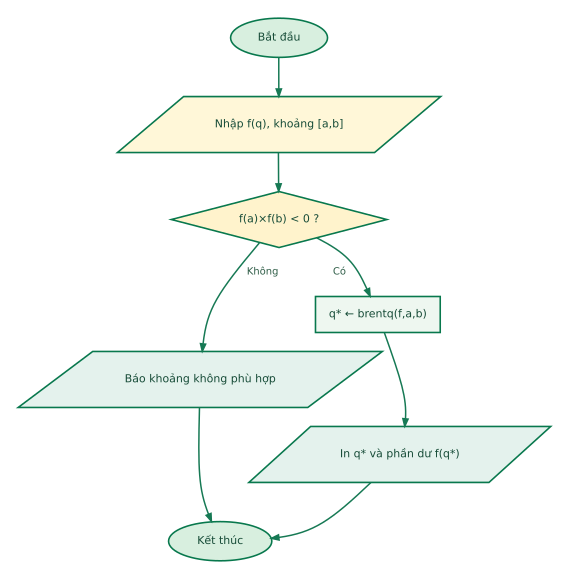

Khóa học / Mô-đun 4 / Bài 14
01 Mục tiêu và kiến thức tiên quyết
- Thiết lập phương trình cân bằng đại lượng và đơn vị.
- Tìm nghiệm số trong khoảng cho trước bằng scipy.optimize.brentq.
- Kiểm tra phần dư, khoảng nghiệm và giải thích sai số tính toán.
Kiến thức tiên quyết: bài trước, kiến thức lập trình tương ứng.
02 Tình huống kỹ thuật
Xác định điểm làm việc của một mô hình quạt và hệ ống bằng cách tìm nghiệm phương trình áp suất quạt bằng tổn thất hệ thống. Đây là mô hình minh họa để học nghiệm số, không phải đặc tuyến của model thương mại.
Δp_quạt(q)=500−0,5q² (Pa); Δp_hệ(q)=20+0,7q² (Pa), q tính bằng đơn vị lưu lượng quy ước.
q* = 20 (đơn vị lưu lượng quy ước), phần dư gần 0 Pa.
03 Kiến thức và thuật ngữ cốt lõi
Nghiệm của phương trình
Nếu f(q)=0 biểu diễn cân bằng áp suất, nghiệm phải nằm trong miền vật lý q≥0. Không chỉ xác định nghiệm số mà còn cần biết f liên tục và có đổi dấu trên đoạn chọn.
Thuật toán brentq
brentq là phương pháp tìm nghiệm một chiều theo khoảng. Nếu f(a) và f(b) không trái dấu, thuật toán có thể báo lỗi; không nên che lỗi bằng cách tùy ý đổi hệ số.
Kiểm tra phần dư
Với f(q) có đơn vị Pa, |f(q*)| nhỏ nghĩa là cân bằng áp suất của mô hình được thỏa gần đúng. Sai số phần dư và sai số biến q không hoàn toàn tương đương.
Các sai số khác nhau
Phải phân biệt sai số mô hình, đo lường và sai số số học. Một nghiệm được tính rất chính xác vẫn có thể dự báo sai nếu mô hình không đại diện hệ thống thật.
04 Xây dựng và kiểm tra thuật toán
Trước khi xem chương trình, hãy đọc dữ liệu đầu vào, chọn điều kiện rẽ nhánh hoặc lặp, rồi dự đoán kết quả. Mã giả mô tả ý nghĩa thuật toán; không phải cú pháp Python thực thi được.

Mã giả
Lần vết các bước phân tích
Đây là lần vết các dòng mã giả, không phải trình thông dịch Python. Tự kiểm tra nhánh điều kiện bằng bảng ca kiểm thử ở mục 07.
05 Chương trình Python đã kiểm tra
Đọc mã, dự đoán kết quả và chạy tệp bai_14.py trong thư mục code. Các mã bài 9 trở lên có thể cần dữ liệu đi kèm từ thư mục data.
from scipy.optimize import brentq
def chenhlech_ap(q):
ap_quat_pa = 500 - 0.5 * q**2
ap_he_pa = 20 + 0.7 * q**2
return ap_quat_pa - ap_he_pa
a, b = 0.0, 30.0
assert chenhlech_ap(a) * chenhlech_ap(b) < 0
q_nghiem = brentq(chenhlech_ap, a, b)
phan_du_pa = chenhlech_ap(q_nghiem)
print(f"q* = {q_nghiem:.3f} (don vi quy uoc)")
print(f"Phan du = {phan_du_pa:.3e} Pa")
06 Thử nghiệm tham số có hướng dẫn
Thay đổi đầu vào để kiểm tra trực giác và đối chiếu với kết quả dự đoán. Trình khám phá này được lập trình lại bằng JavaScript theo bài toán minh họa, không phải kết quả chạy mã Python.
07 Thực hành và kiểm thử
Thực hiện các nhiệm vụ theo thứ tự từ có hướng dẫn đến độc lập; ghi lại kết quả thực tế của chương trình và so sánh với kết quả kỳ vọng.
- Tính f(20) bằng tay để xác nhận kết quả.
- Thay miền [0,10], quan sát điều kiện đổi dấu bị vi phạm.
- Giải thích tại sao q* không tự là lưu lượng thật của quạt.
Bảng kiểm thử bắt buộc
| Ca kiểm thử | Dữ liệu/điều kiện | Kết quả kỳ vọng |
|---|---|---|
| Nghiệm chuẩn | q=20 | f(20)=0 Pa |
| Biên trái | q=0 | f(0)=480 Pa |
| Biên phải | q=30 | f(30)<0 Pa |
| Không đổi dấu | f(a)f(b)>0 | Không thể áp dụng điều kiện brentq như mẫu |
08 Vận dụng vào chuyên ngành
Quan hệ đường đặc tính quạt–hệ ống chỉ mang ý nghĩa minh họa; khi tính thật phải lấy đường đặc tính đã xác minh.
Áp dụng tư duy nghiệm cân bằng cho mô hình tải cơ hoặc áp suất kỹ thuật giả định.
09 Trắc nghiệm và phản hồi
Mỗi câu có bốn phương án A/B/C/D. Chọn một phương án cho mỗi câu rồi nhấn Chấm và giải thích để xem vì sao từng phương án đúng hoặc chưa phù hợp.
Rubric tham khảo (100 điểm)
| Thành phần | Điểm |
|---|---|
| Đặc tả dữ liệu, đơn vị, giả thiết | 20 |
| Mã giả, trình tự thuật toán | 20 |
| Mã Python và tổ chức hàm/dữ liệu | 25 |
| Kiểm thử, đối chiếu, phân tích sai số | 25 |
| Giải thích và đề xuất cải tiến | 10 |
10 Nhật ký học tập và đánh dấu tiến độ
Tiến độ và ghi chép chỉ lưu trong trình duyệt hiện tại; không đồng bộ với hệ thống điểm của trường.
11 Tài liệu tham khảo và nguồn
| Nguồn | Vai trò và phạm vi sử dụng |
|---|---|
| Python for Science and Engineering.pdf | H.-P. Halvorsen — tính toán số, giải phương trình, đồ thị, mô phỏng và dữ liệu kỹ thuật. |
| SciPy Documentation | SciPy optimize, integrate và công cụ tính toán khoa học. |
| BAI THUC HANH PYTHON CO BAN 2022.pdf | Khoa CNTT, bài thực hành Python cơ bản — nhập/xuất, điều khiển, dữ liệu, hàm và tổng hợp. |
Học liệu mới được viết lại theo định hướng sư phạm. Không trích lại nguyên văn hoặc phân phối các slide/sách gốc trong gói website.